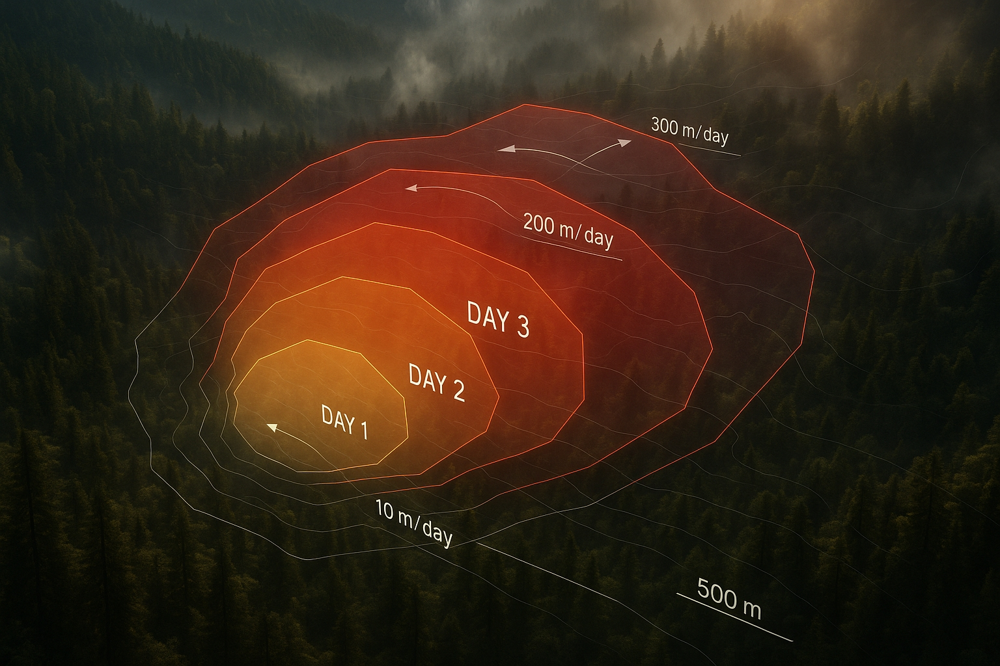
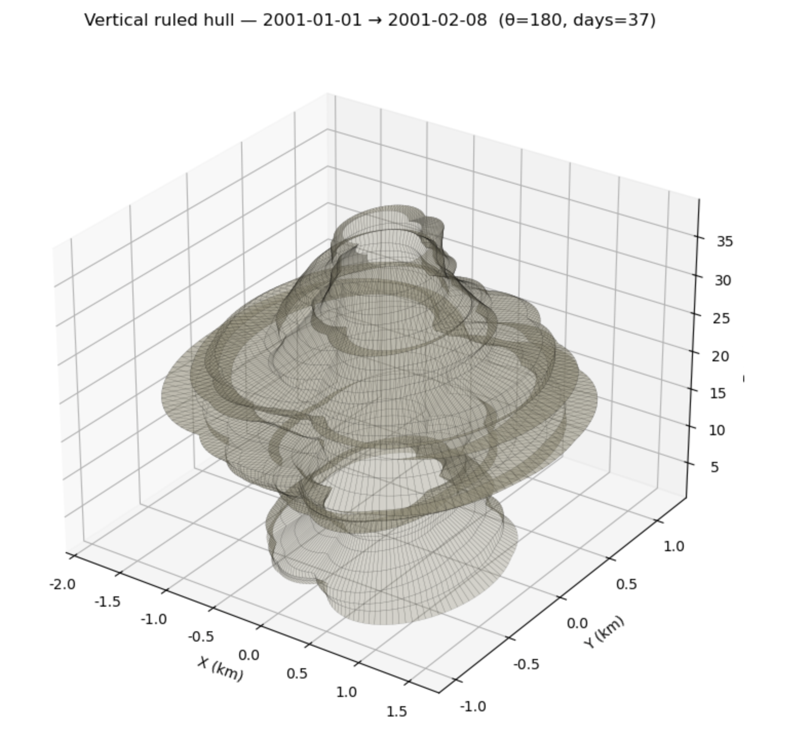
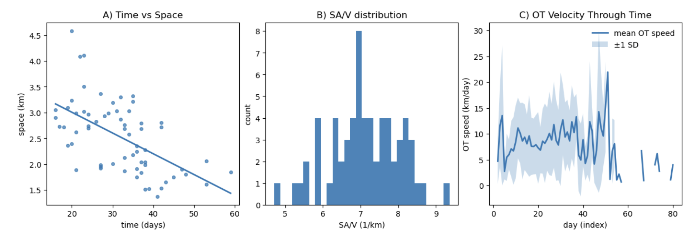
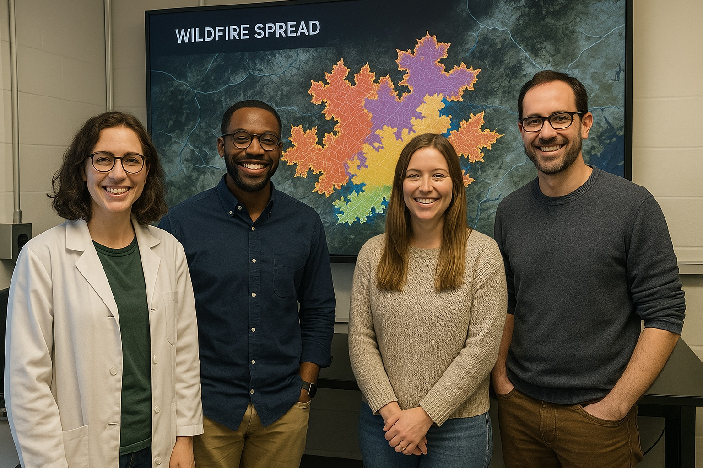
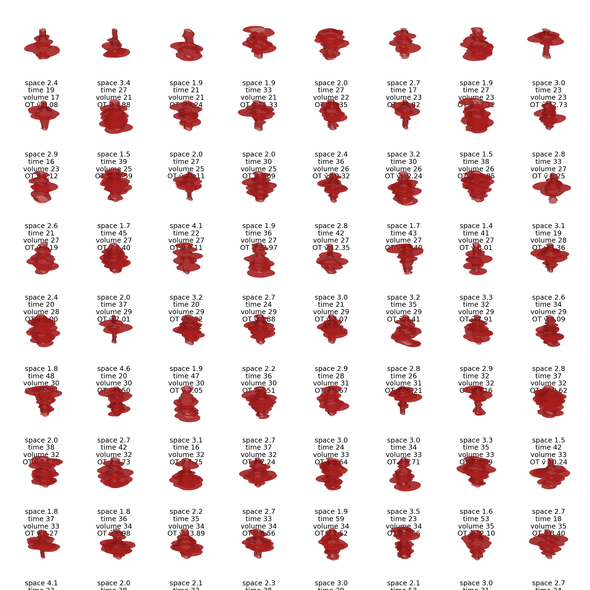

How Fast is a Fire?

Tip: Click the edit button on this example page to view the Markdown that produced it. This is often the fastest way to learn how to format your own page.
Wildfire spread is often described as a front moving across a landscape, but satellite products usually give us something messier and more interesting: changing polygons. Those polygons grow, stretch, fold, branch, merge, translate, dilate, and deform. Once a fire becomes an evolving polygon, velocity is no longer one obvious number.
This fictitious Summit team built a compact decision framework for choosing fire polygon velocity metrics. Rather than asking which metric is correct, the team asked which story each metric tells about the same evolving perimeter. Their main insight was simple: choosing a velocity metric is choosing a story about the fire.
People
The group combined fire science, geospatial analysis, visualization, and reproducible workflow design. That mix mattered because the central question was both technical and interpretive: how should a team turn satellite-derived geometry into a claim about fire behavior?
| Name | Affiliation | Contact | Github |
|---|---|---|---|
| Ty Tuff | ESIIL facilitator | ty.tuff@colorado.edu | github.com/tytuff |
| Aakriti Joshi | Summit learner | aakriti@example.org | github.com/aakriti-example |
| Jane Example | Summit learner | jane@example.org | github.com/jane-example |
| John Example | Summit learner | john@example.org | github.com/john-example |
Team Norms and Decision Making
Our team norms:
- Keep the analysis small enough to explain clearly.
- Name assumptions before choosing a metric.
- Treat disagreement as a design signal, not a blocker.
- Prefer one reproducible figure over many disconnected outputs.
Our decision making strategy:
We used gradient-of-agreement checks for major choices. If the team was not in the green, we narrowed the question or moved the unresolved issue to next steps.
Our product(s)
The team produced a small Summit-ready package for comparing fire polygon velocity metrics:
- a metric-selection decision guide
- a comparison figure for seven velocity definitions
- a short reproducible notebook workflow
- a plain-language explanation of what each metric reveals and obscures
The product is useful because it reframes fire velocity as a decision problem. A modeler, manager, or ecologist should first ask what kind of movement matters, then choose a metric that matches that use.
Our question(s)
How does the choice of fire polygon velocity metric change the story we tell about wildfire spread?
The team used three subquestions to keep the work focused:
- When does a fire look fast because the perimeter advances?
- When does it look fast because the burned area reorganizes internally?
- Which metrics are useful for operational spread, ecological interpretation, or model validation?
Why this matters (the upshot)
The same wildfire can look explosive or nearly motionless depending on how velocity is defined. That is not a math error. It is a consequence of asking different questions about the same geometry.
This matters for science and management because velocity metrics are used to compare fires, validate models, interpret ecological effects, and communicate risk. A head-fire surge, a migrating fire center, and a whole-perimeter reorganization are different events. Treating them as one number can hide the choice that actually shapes the conclusion.
Data sources we’re exploring
The team used a controlled synthetic ten-day polygon sequence to compare metrics without observational noise. The sequence mimicked directional, fractal fire growth so the group could see how each metric behaved when the same polygon expanded, stretched, and reorganized.
They also reviewed real perimeter products that future teams could test:
| Data source | What it offers | One-line note |
|---|---|---|
| MODIS MCD64A1 | Daily burn-date maps at coarse resolution | Useful for continental summaries, but narrow runs can be missed. |
| VIIRS VNP64A1 | Finer burned-area mapping than MODIS | Better for smaller or fragmented burns, still raster-derived. |
| ESA FireCCI | Global burned-area mapping from Sentinel-3 | Helpful for cross-region comparison. |
| MTBS | Landsat-based fire perimeters and severity for large U.S. fires | Strong for retrospective ecology, less useful for near-real-time velocity. |
| Active-fire alpha shapes | Near-real-time perimeters from active fire detections | Timely and dynamic, but jagged and sensitive to sensor noise. |

A synthetic perimeter sequence helped the team separate metric behavior from the artifacts that come with real satellite-derived polygons.
Methods/technologies we’re testing
The team compared seven ways to measure fire polygon velocity. The table became the project's main decision guide.
| Metric | What it captures | Best used for | Main caveat |
|---|---|---|---|
| Optimal transport / Sinkhorn | Whole-system rearrangement of burned area | Comparing whole-fire dynamics and regime shifts | Depends on parameter choices and is less intuitive than simpler metrics. |
| ΔA/L | Area gain divided by perimeter length | Physics-based spread baseline | Returns zero when no new area is added. |
| P95 advance | Fast leading-edge movement | Head-fire surges and directional runs | Sensitive to cutoff choices and boundary artifacts. |
| Longest vector / directed Hausdorff | The single largest leap between perimeters | Spotting, extreme runs, and outlier detection | Can exaggerate one noisy jump. |
| Mean advance | Typical boundary movement | Conservative baseline comparisons | Hides directional runs and anisotropy. |
| Equivalent radius growth | Growth as if the fire were circular | Long-term summaries and simple size comparisons | Ignores irregular shape and dendritic growth. |
| Centroid drift | Movement of the polygon center | Migration questions and net displacement | Misses expansion when the center stays still. |
The workflow used Python geospatial tools to calculate daily polygon change, compare metric curves, and export figures. For the Summit, the team prioritized a readable notebook over a large software package.
Results
All seven metrics tracked broad growth in the synthetic fire sequence, but they diverged in magnitude and interpretation. The largest split was philosophical. ΔA/L measures perimeter-driven area gain, so it can drop to zero when no new area is added. Optimal transport can still report kilometers of internal displacement because it measures how the burned mass rearranges.
That contrast became the team's core result. Fire velocity is not a single property. It is a family of perspectives, and each perspective is useful only when it matches the decision context.

The comparison figure shows that optimal transport can remain high while area-gain metrics flatten, making the choice of velocity definition visible instead of hidden.
The team treated the result as a diagnostic, not a final fire model. Resolution, smoothing, raster stair-step edges, and observation interval can all change metric values. Those limits became part of the guidance: pick the metric for the question, then test whether the data source can support that metric.
Team Photo

A fictitious Summit working session where the team narrowed a large fire-behavior problem into one comparison figure and one decision guide.
Findings at a glance
Fire velocity is not one number. The same polygon sequence can look fast, slow, or stalled depending on the metric.
The largest split is philosophical. Optimal transport measures whole-system rearrangement, while ΔA/L measures perimeter-driven area gain.
Metric choice should follow the decision context. Operational surge detection, ecological interpretation, and model validation need different velocity definitions.
Visuals that tell a story
Visual 1: A fire perimeter can expand at different apparent speeds depending on where and how velocity is measured.

Visual 2: Synthetic polygon sequences make it possible to compare metrics under controlled, repeatable fire-shape changes.
Visual 3: The velocity curves tell different stories about the same evolving fire, which is exactly why the decision guide matters.
What’s next
Immediate follow-ups:
- Apply the metric comparison to one observed fire perimeter product.
- Test sensitivity to spatial resolution, smoothing, and observation interval.
- Convert the decision guide into a reusable notebook helper.
What we would do with one more week or month:
- Compare synthetic and observed fire perimeters.
- Link metric choice to model validation and management use cases.
- Build guidance for when each metric is appropriate.
Who should see this next:
- Fire modelers comparing simulated and observed spread.
- Remote-sensing teams building perimeter products.
- Managers and analysts who need to explain whether a fire is surging, expanding, shifting, or reorganizing.
Cite & Reuse
This example uses the Project OASIS template citation flow ESIIL Summit Team Contributors, 2026. The scientific framing is adapted from the project brief, Seven ways to measure fire polygon velocity.
Reuse the structure, figures, and workflow patterns with attribution where appropriate. Dataset-specific credits and licenses should be added when a team replaces the synthetic example with real perimeter products.
References
- ESIIL Summit Team Contributors. (2026). OASIS Project Group Template. Reusable public-facing team site template. https://cu-esiil.github.io/Project_group_OASIS/.